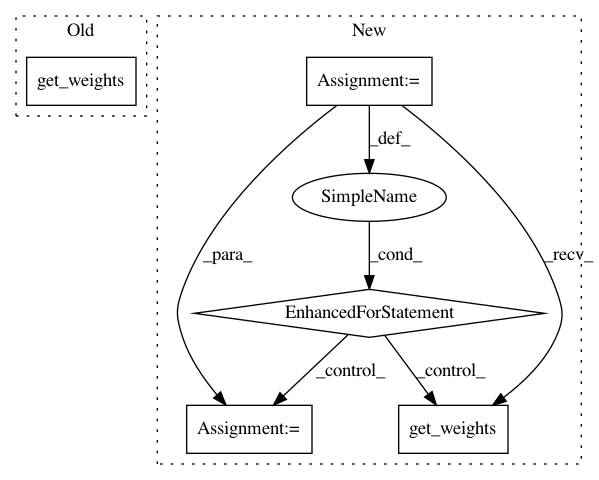

60027b1801ee16340f00183b3f3c46468117c8f1,neuron/models.py,,copy_weights,#Any#Any#,228
Before Change
for layer in dst_model.layers:
print(layer.name)
layer.set_weights(src_model.get_layer(layer.name).get_weights())
return dst_model
After Change
def copy_weights(src_model, dst_model):
copy weights from the src model to the dst model
for idx in range(len(dst_model.layers)):
layer = dst_model.layers[idx]
layer.set_weights(src_model.layers[idx].get_weights())
// for layer in dst_model.layers:
// layer.set_weights(src_model.get_layer(layer.name).get_weights())
return dst_model
// seg_model_load = keras.models.load_model("/data/vision/polina/users/adalca/fsCNN/output/unet-prior-v3/hdf5/run_5/model.88-0.00.hdf5", custom_objects={"loss": wcce46})
// wts46 = seg_model_load.get_layer("likelihood").get_weights()
In pattern: SUPERPATTERN
Frequency: 3
Non-data size: 5
Instances
Project Name: adalca/neuron
Commit Name: 60027b1801ee16340f00183b3f3c46468117c8f1
Time: 2017-04-21
Author: adalca@turmeric.csail.mit.edu
File Name: neuron/models.py
Class Name:
Method Name: copy_weights
Project Name: rail-berkeley/softlearning
Commit Name: d35509ef4fed2e588adb9285ee1c9bd0eb16582a
Time: 2019-02-01
Author: hartikainen@berkeley.edu
File Name: softlearning/algorithms/sql.py
Class Name: SQL
Method Name: _update_target
Project Name: rail-berkeley/softlearning
Commit Name: d33c114816429c494e2a40625849d57ae2103f3f
Time: 2018-11-22
Author: hartikainen@berkeley.edu
File Name: softlearning/algorithms/sac.py
Class Name: SAC
Method Name: _update_target